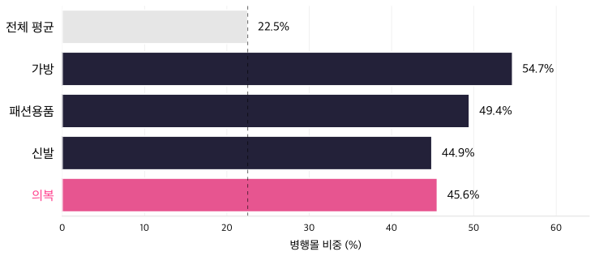

2026.03–08
6개월 월별 자료입니다. 7월과 8월은 잠정치(p)라서 이후 수정될 수 있습니다.
→ 7·8월은 p) 표기중간고사 발표 · 데이터 분석 입문
온라인 전용몰과 온·오프라인 병행몰의 의류 거래 비교
데이터 분석을 처음 배우는 분들을 위한 15분 발표
01 · 문제 제기
의류는 2026년 8월 온라인 거래액 1.33조 원, 23개 상품군 중 7위입니다. 온라인과 오프라인 접점을 함께 비교해 보기 좋은 카테고리로 선택했습니다.
막대 길이는 4조 원을 100%로 한 상대 크기입니다. 7·8월은 잠정치(p)입니다.
02 · 데이터와 방법
같은 기간, 같은 상품군(의복)에서 온라인 전용몰과 온·오프라인 병행몰의 온라인 거래액을 비교합니다.
6개월 월별 자료입니다. 7월과 8월은 잠정치(p)라서 이후 수정될 수 있습니다.
→ 7·8월은 p) 표기슬라이드에서는 읽기 쉽게 조 원으로 바꿔 표기합니다. 1조 = 1,000,000백만 원입니다.
→ 2.02조 = 2,021,047백만 원전용몰은 온라인만, 병행몰은 오프라인 매장도 운영하는 사업자의 온라인 거래입니다.
→ 병행몰 ≠ 오프라인 매출가장 중요한 주의: 이 통계는 온라인 거래만 집계합니다. “병행몰이 더 잘 팔렸다”는 말은 “병행몰의 온라인 거래가 덜 줄었다”로만 읽어야 합니다. 또한 이 발표는 기술적 비교이며, 인과관계를 증명하는 실험이 아닙니다.
03 · 규모
의류 온라인 거래액은 3월 2.02조 원에서 8월 1.33조 원으로 줄었습니다. 34.38% 감소입니다.
세로축: 조 원. 7·8월은 잠정치(p)입니다.
04 · 채널
3월을 100으로 두면, 전용몰은 62.1, 병행몰은 70.5가 됐습니다. 전용몰 -37.94%, 병행몰 -29.53%입니다.
점선은 3월(=100) 기준선입니다. 두 선의 간격이 벌어질수록 두 채널의 변화 차이가 큽니다.
05 · 점유율
3월 42.42%에서 8월 45.55%로 3.13%p 상승했습니다. 7월에는 46.58%로 정점이었습니다.
막대 전체가 100%입니다. 아래쪽(마젠타)이 병행몰, 위쪽(네이비)이 전용몰입니다. 점선은 50% 기준선입니다.
06 · 반전
7월에는 병행몰이 덜 줄었지만, 8월에는 병행몰이 더 크게 줄었습니다. 한 달만 보면 결론이 달라집니다.
07 · 기여도
3→8월 의류 온라인 거래액은 0.69조 원 줄었고, 그중 63.55%가 전용몰, 36.45%가 병행몰에서 발생했습니다.
기여도 = 각 채널 감소액 ÷ 전체 감소액 × 100. 비중(45.6%)과 기여도(36.5%)는 다른 개념입니다.
08 · 카테고리
의복·가방·패션용품·신발의 병행몰 비중은 47.0%, 전체 상품군 평균은 22.5%입니다.

의복 45.6%09 · 포지션
가로축은 거래액, 세로축은 병행몰 비중입니다. 규모 상위권 상품군 중 병행몰 비중이 높은 것은 의류와 여행서비스 정도입니다.
점의 위치는 규모와 비중을 동시에 보여 줍니다. 인과관계가 아닙니다.
10 · 해석 프레임
관찰된 차이를 곧바로 인과로 읽지 않기 위해, 가능한 설명을 세 갈래로 나눠 검토합니다.
사이즈·핏 확인, 교환·반품 같은 오프라인 접점이 온라인 구매 결정에 영향을 줄 수 있습니다.
→ 접점오프라인에서 쌓은 브랜드 경험과 멤버십이 온라인 구매의 신뢰를 높일 수 있습니다.
→ 신뢰전용몰의 가격 경쟁력, 상품 구색, 배송·반품 정책이 8월 역전을 만들었을 수 있습니다.
→ 반론검증 순서: 접점 데이터 → 신뢰 설문 → 가격·배송 정책 비교
11 · 접점
의류의 사이즈·핏 리스크가 크다면, 오프라인에서 확인하는 경험이 구매 전후에 개입할 수 있습니다.
온라인에서 상품을 찾고 가격을 비교합니다.
매장에서 사이즈와 소재를 확인합니다.
온라인 또는 매장에서 결제합니다.
매장에서 교환·반품을 처리할 수 있습니다.
검증 아이디어: 반품·교환율, 오프라인 방문→온라인 구매 전환, 사이즈 관련 CS 비중
12 · 신뢰
병행몰은 오프라인에서 쌓은 브랜드 경험을 온라인 구매의 신뢰로 연결할 수 있습니다.
매장 방문, 제품 확인, 브랜드 접촉
품질·교환·서비스에 대한 기대
같은 브랜드의 온라인 채널에서 결제
검증 아이디어: 브랜드 신뢰 설문, 오프라인 방문 이력과 온라인 구매 전환
13 · 반론
“병행몰이 항상 강하다”는 결론은 성급합니다. 전용몰 쪽 요인도 함께 검토해야 합니다.
판별 아이디어: 8월 프로모션 캘린더와 채널별 가격·배송 정책 비교
14 · 미해결 질문
전체 의류 거래액은 7월 -15.57%, 8월 -19.33%로 급감했습니다. 하지만 이 표에는 원인을 설명하는 변수가 없습니다.
여름철 의류 수요 변화가 영향을 줄 수 있지만, 이 표에는 날씨 변수가 없습니다.
→ 별도 기상·소비 데이터 필요주요 할인 행사와 프로모션 일정은 거래액을 단기간에 움직일 수 있습니다.
→ 캠페인 캘린더 필요가처분소득·소비심리·금리 같은 거시 변수도 후보이지만 이 표에는 없습니다.
→ 거시 지표 필요15 · 한계
좋은 데이터 분석은 “무엇을 말할 수 없는지”를 함께 밝힙니다.
병행몰은 오프라인 매출이 아니라, 오프라인 매장을 가진 사업자의 온라인 거래입니다.
→ “오프라인 매출”로 읽으면 오독계절성과 구조적 추세를 단정할 수 없습니다. 3~8월의 관찰일 뿐입니다.
→ 추세가 아니라 관찰p) 표시가 붙은 값은 이후 수정될 수 있습니다. 증감률도 함께 달라질 수 있습니다.
→ 숫자가 바뀔 수 있음참고: 2026-07 의복 계는 전용몰+병행몰 합과 1백만 원 차이가 납니다(원자료 반올림). 결론에는 영향이 없습니다.
그래서 결론은 “병행몰이 더 강하다”가 아니라, “접점 가설을 더 검증하자”입니다.
16 · 결론
누적과 월별을 함께 보면 “병행몰이 항상 강하다”는 결론은 성립하지 않습니다.
-29.5%
전용몰은 -37.9%. 3→8월 누적 기준입니다.
-21.1%
8월 병행몰. 전용몰은 -17.8%였습니다.
?
피팅·교환·신뢰가 실제로 작동했는지는 별도 데이터가 필요합니다.
다음 질문: 의류 소비자는 어디서 확인하고, 어디서 결제하는가?
17 · 참고문헌
수치와 정의는 아래 1차 자료에서 가져왔습니다.
추가 문헌(R02–R06: 조사개요, 옴니채널 소비자 행태, 반품·사이즈, 온·오프라인 연계 사례, 2026년 7~8월 소비 둔화)은 다음 단계에서 보강합니다. 현재 해석 슬라이드는 인과를 주장하지 않습니다.
Q & A